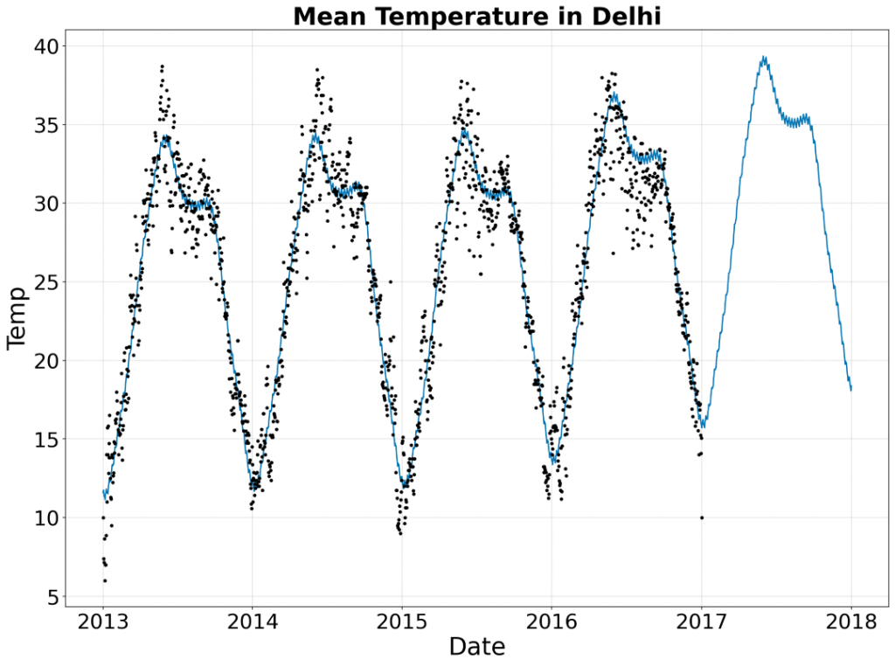
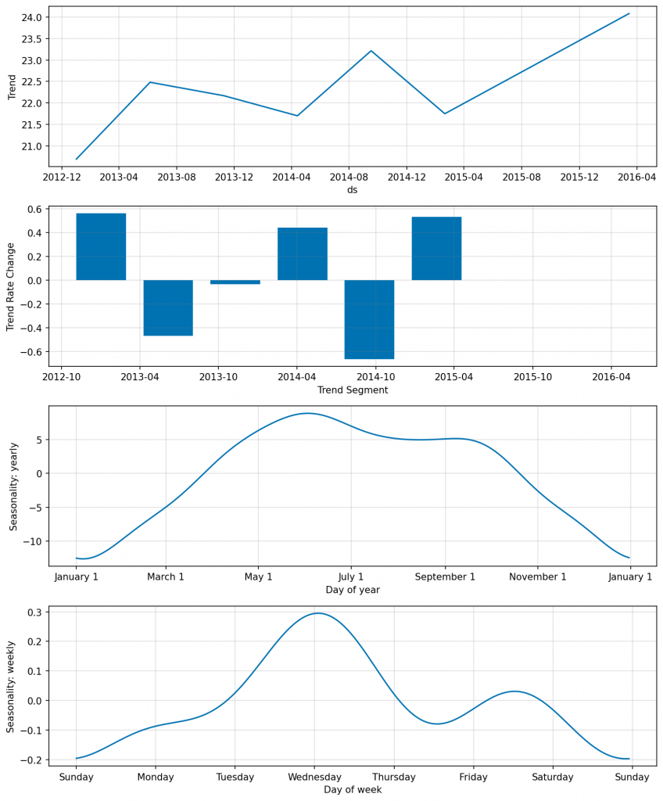
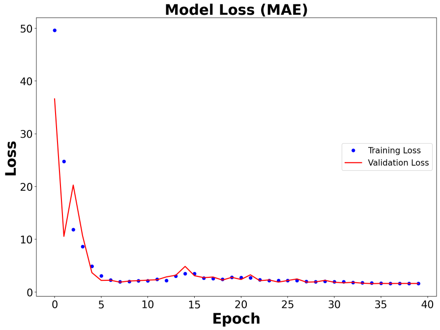

👉 This article is also published on Towards Data Science blog.
NeuralProphet 1 is a python library for modeling time-series data based on neural networks. It’s built on top of PyTorch and is heavily inspired by Facebook Prophet and AR-Net libraries.
NeuralProphet Library
NeuralProphet vs. Prophet
From the library name, you may ask what is the main difference between Facebook’s Prophet library and NeuralProphet. According to NeuralProphet’s documentation, the added features are:
- Using PyTorch’s Gradient Descent optimization engine making the modeling process much faster than Prophet
- Using AR-Net for modeling time-series autocorrelation (aka serial correlation)
- Custom losses and metrics
- Having configurable non-linear layers of feed-forward neural networks,
- etc.
Project Maintainers
Based on the project’s GitHub page, the main maintainer of this project is Oskar Triebe from Stanford University with collaboration from Facebook and Monash University.
Installation
The project is in the beta phase, so I would advise you to be cautious if you want to use this library in a production environment.
You can install the package using pip install neuralprophet. However, if you are going to use the package in a Jupyter Notebook environment, you should install their live version pip install neuralprophet[live]. This will provide more features such as a live plot of train and validation loss using plot_live_loss().
git clone https://github.com/ourownstory/neural_prophet
cd neural_prophet
pip install .[live]I would recommend creating a fresh environment (a conda or venv) and installing the NeuralProphet package from the new environment letting the installer take care of all dependencies (it has Pandas, Jupyter Notebook, PyTorch as dependencies).
Now that we have the package installed, let’s play!
Implementation with a Case Study
Here, I’m using the daily climate data in Delhi from 2013 to 2017 that I found on Kaggle. First, let’s import the main packages.
import pandas as pd
from neuralprophet import NeuralProphetThen, we can read the data into a Panda DataFrame. NeuralProphet object expects the time-series data to have a date column named ds and the time-series column value we want to predict as y.
# Data is from https://www.kaggle.com/sumanthvrao/daily-climate-time-series-data
df = pd.read_csv("./DailyDelhiClimateTrain.csv", parse_dates=["date"])
df = df[["date", "meantemp"]]
df.rename(columns={"date": "ds", "meantemp": "y"}, inplace=True)Now let’s initialize the model. Below, I’ve brought all default arguments defined for the NeuralProphet object, including additional information about some. These are the hyperparameters you can configure in the model. Of course, if you are planning to use the default variables, you can just do model = NeuralProphet().
# model = NeuralProphet() if you're using default variables below.
model = NeuralProphet(
growth="linear", # Determine trend types: 'linear', 'discontinuous', 'off'
changepoints=None, # list of dates that may include change points (None -> automatic )
n_changepoints=5,
changepoints_range=0.8,
trend_reg=0,
trend_reg_threshold=False,
yearly_seasonality="auto",
weekly_seasonality="auto",
daily_seasonality="auto",
seasonality_mode="additive",
seasonality_reg=0,
n_forecasts=1,
n_lags=0,
num_hidden_layers=0,
d_hidden=None, # Dimension of hidden layers of AR-Net
ar_sparsity=None, # Sparcity in the AR coefficients
learning_rate=None,
epochs=40,
loss_func="Huber",
normalize="auto", # Type of normalization ('minmax', 'standardize', 'soft', 'off')
impute_missing=True,
log_level=None, # Determines the logging level of the logger object
)After configuring the model and its hyperparameters, we need to train the model and make predictions. Let’s make up to a one-year prediction of the temperature.
metrics = model.fit(df, validate_each_epoch=True, freq="D")
future = model.make_future_dataframe(df, periods=365, n_historic_predictions=len(df))
forecast = model.predict(future)You can simply plot the forecast by calling model.plot(forecast) as following:
fig, ax = plt.subplots(figsize=(14, 10))
model.plot(forecast, xlabel="Date", ylabel="Temp", ax=ax)
ax.set_title("Mean Temperature in Delhi", fontsize=28, fontweight="bold")The one-year forecast plot is shown below, where the time period between 2017-01-01 to 2018-01-01 is the prediction. As can be seen, the forecast plot resembles the historical time-series. It both captured the seasonality as well as the slow-growing linear trend.

You can plot the parameters by calling model.plot_parameters()

The model loss using Mean Absolute Error (MAE) is plotted below. You can also use the Smoothed L1-Loss function.
fig, ax = plt.subplots(figsize=(14, 10))
ax.plot(metrics["MAE"], 'ob', linewidth=6, label="Training Loss")
ax.plot(metrics["MAE_val"], '-r', linewidth=2, label="Validation Loss")
# You can use metrics["SmoothL1Loss"] and metrics["SmoothL1Loss_val"] too.
Conclusion
In this post, we talked about NeuralProphet, a python library that models time-series based on Neural Networks. The library uses PyTorch as a backend. As a case study, we created a prediction model for daily Delhi climate time-series data and made a one-year prediction. An advantage of using this library is its similar syntax to Facebook’s Prophet library.
Useful Links
Footnotes
Citation
@online{alizadeh2020,
author = {Esmaeil Alizadeh},
title = {NeuralProphet: {A} {Time-Series} {Modeling} {Python}
{Library} Based on {Neural-Networks}},
date = {2020-12-03},
url = {https://new.ealizadeh.com/blog/neural-prophet-library},
langid = {en}
}